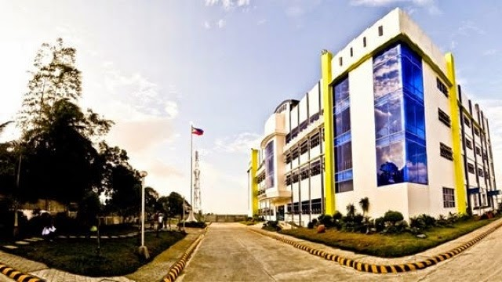
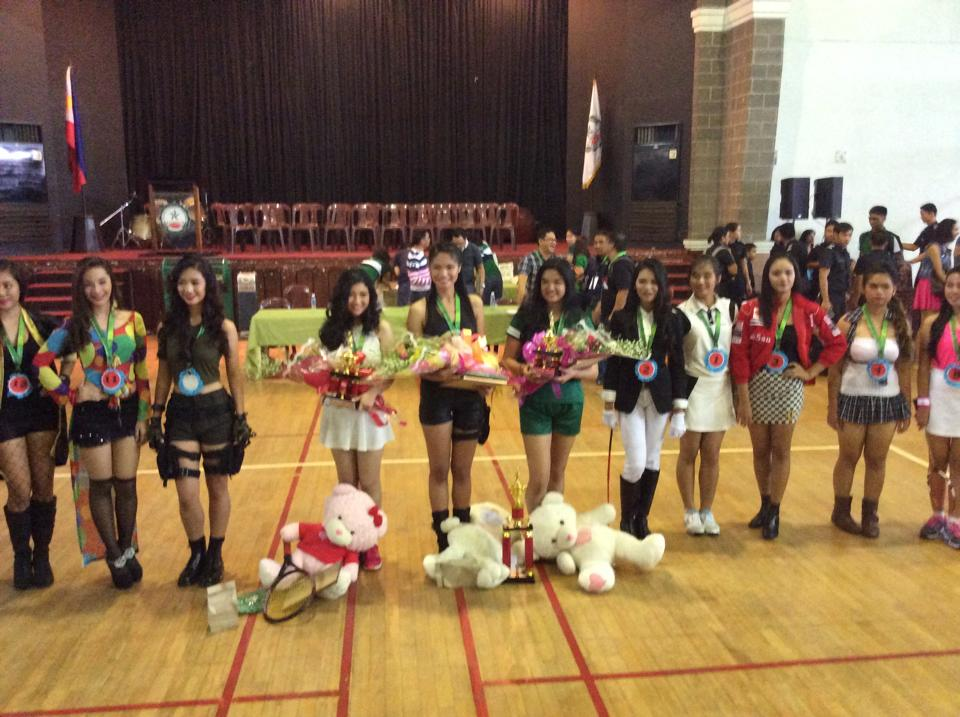
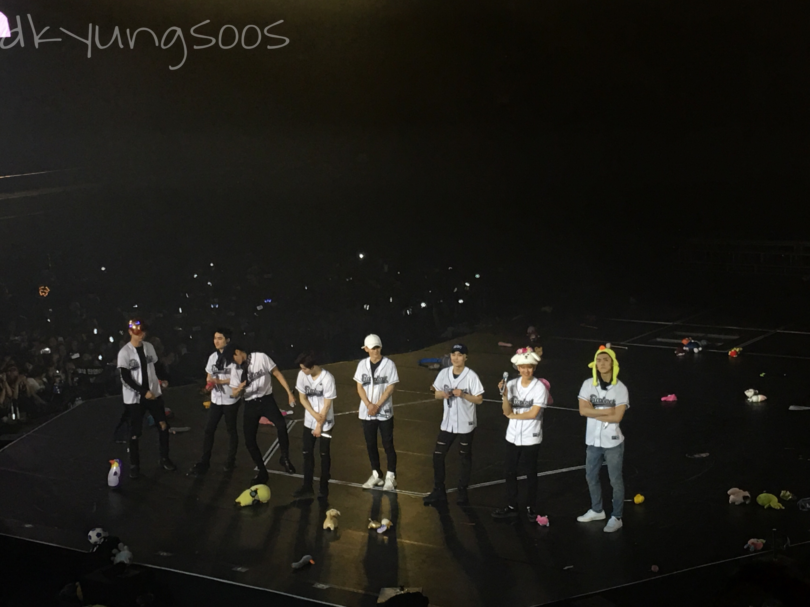

Hi! I'm Cristine Encabo, a third-year college student taking up Bachelor of Science in Psychology at De La Salle University-Dasmariñas. I study, fangirl, sleep, fangirl, sleep, and sleep.
I've spent 10 years of my education in my Alma Mater, Fiat Lux Academe wherein I met a lot people, some stayed some didn't and I think that's the beauty of growing up. Within these 10 years, I am very much proud to say that I was a consistent honor student all throughout. I spent some sleepless nights but college is no better than this.


In 2014, I had the privilege to represent our school in an interschool competition (CISAA) held at Ugnayang La Salle. It was definitely one of the most unforgettable experiences in my whole existence because it played a big part in gaining my self-confidence and trust as an individual. Never in my life did I thought that I would face and walk in front of a large crowd with a mini skirt and full make up on (not to mention the big curls I was wearing). Lucky enough, I brought honor to the school by finishing as the first runner-up. Not bad for a first timer like me who shakes even when flashing a casual smile after the competition!

The fourth one from left is me holding the bouquet of flowers and my trophy as the first runner-up.
I'm the type of person who can fall in love with someone whom I haven't met in person. I can love someone who is million miles away from me. And I can love someone who doesn't even know my mere existence.
The kind of love which I can only express through supporting them - yes, THEM.
The people I'm talking about are the people who comprise the group that writes and overwrites history not only in the Korean music industry but also internationally - EXO.
170225 Day 1 of EXOr'dium in Manila and I'm in the VIP Standing section.

170226 Day 2 of EXOr'dium in Manila and I'm in the VIP Seated section.
They are one of my favorite people and they are basically a part of my life now for one thing, I consider them when making decisions. Funny, I know. Some people find it hilarious, my family perhaps, because I am able to invest on them and will still do but who cares, it makes me happy and keeps me sane at the very least ever since I entered college.
And talking about college, year 2015 when I decided to enter this field of taking up BS Psychology with no assurance of what I will encounter. Sure there are tons of new people and, little did I know, tons and tons and tons of paper works. But at this point in my life, there's no turning back and I have come to love my course.
Two more years.
And I am more than willing to endure these two years for the sake of the people who believe in me.
BACK
|